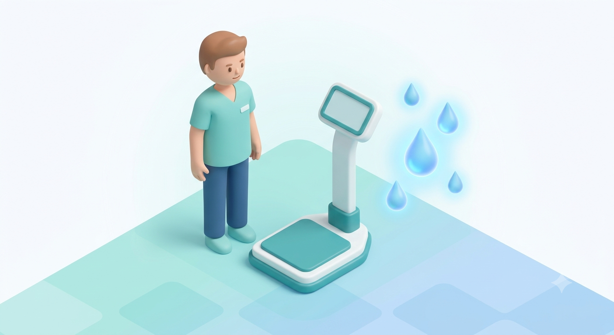
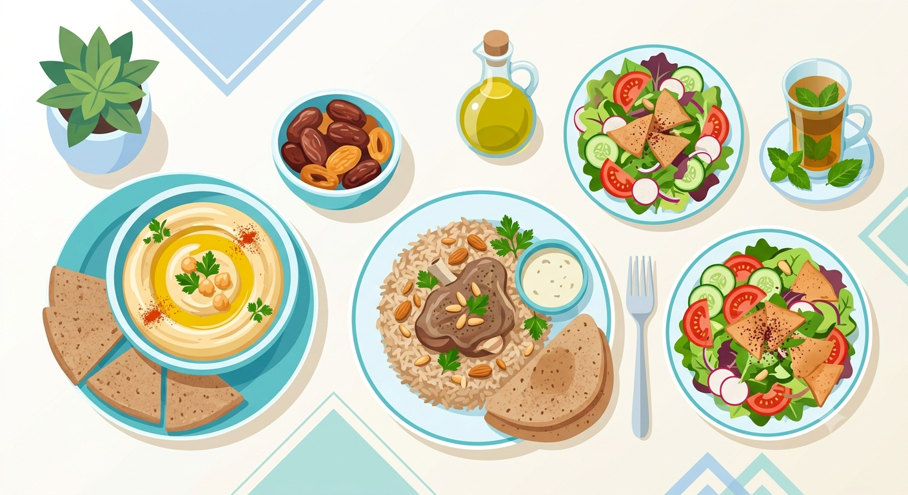
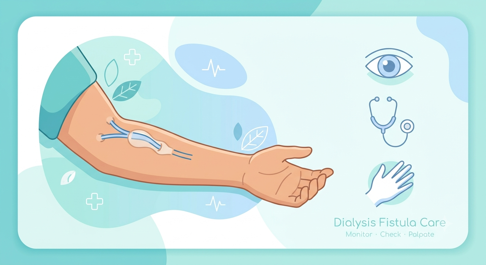
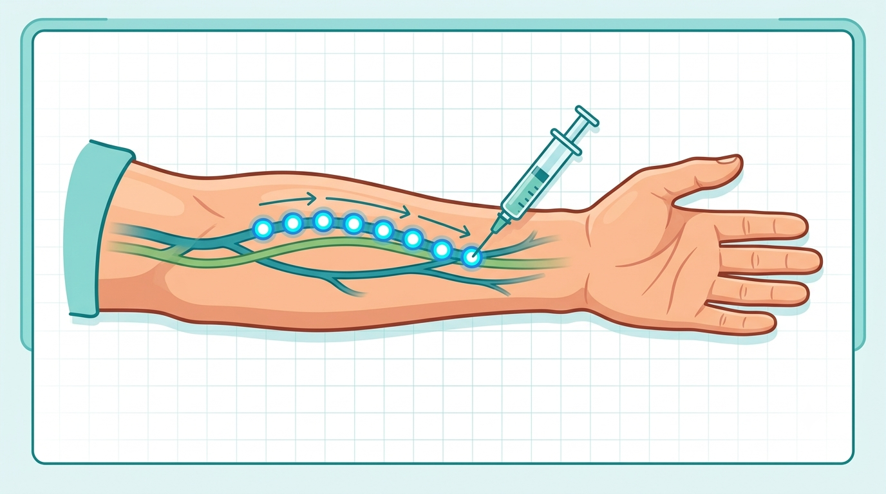

مرجعكم الموثوق لفهم رحلة غسيل الكلى، بمحتوى عملي وواضح لكل من المريض وفريق التمريض
لا نكتفي بتعريفات عامة؛ بل نجيب عن الأسئلة التي يواجهها المريض في حياته اليومية: ماذا يعني الرقم؟ متى أقلق؟ ما الذي يمكنني فعله؟ وما الذي يجب أن أتركه لفريق الغسيل؟
مرض الكلى المزمن (CKD) لا يساوي تلقائيًا الفشل الكلوي أو الحاجة إلى الغسيل. التقييم يعتمد على مدة الخلل، معدل الترشيح الكبيبي المقدّر (eGFR)، وجود الزلال أو أذية كلوية أخرى، وسرعة التغير مع الوقت. وفق KDIGO، يُعد CKD موجودًا عندما يستمر خلل في بنية أو وظيفة الكلى أكثر من ثلاثة أشهر وله أثر صحي. [R1]
ماذا يعني eGFR للمريض؟
أسئلة ذكية يطرحها المريض على فريقه
الجلسة ليست مجرد "تنقية للدم"؛ بل وصفة تجمع بين مدة العلاج، تدفق الدم، تدفق سائل الغسيل، نوع المرشح، إزالة السوائل، وتركيب سائل الغسيل. لذلك قد يكون مريضان على الجهاز نفسه لكن بوصفات مختلفة تمامًا. [R2]
| المعلومة | ماذا تعني للمريض؟ | متى تستحق سؤال الفريق؟ |
|---|---|---|
| الوزن قبل الجلسة | يُقارن بالوزن المستهدف وبالوزن بعد الجلسة السابقة لتقدير تراكم السوائل. | عند زيادة غير معتادة أو ضيق نفس/تورم. |
| الضغط | يساعد على تقييم تحمل السوائل والجلسة، ولا يُفسر رقم منفرد دون أعراض. | هبوط متكرر، دوخة، إغماء، ألم صدر أو ارتفاع مستمر. |
| Kt/V أو URR | مؤشر لكمية إزالة اليوريا وكفاءة الجلسة؛ لدى كثير من المرضى على غسيل ثلاث مرات أسبوعيًا يُستخدم Kt/V ≥1.2 أو URR ≥65% كمرجع، مع اختلاف الهدف حسب الوصفة. | إذا بقي منخفضًا أو يتراجع رغم حضور كامل الجلسات. |
| وقت الجلسة | جزء أساسي من الجرعة؛ تقصير الجلسة قد يقلل إزالة السموم والسوائل. | إذا كان المريض يطلب إنهاء الجلسات مبكرًا بسبب أعراض متكررة. |
لا تُقاس جودة الغسيل برقم Kt/V وحده؛ الأعراض، ضغط الدم، تراكم السوائل، البوتاسيوم، الفوسفور، التغذية، الوصول الوعائي، والالتزام بالوقت كلها جزء من التقييم. [R2,R14]

ما هو الوزن الجاف؟
الوزن الجاف أو الوزن المستهدف هو تقدير سريري للوزن الذي لا تكون عنده علامات واضحة لزيادة السوائل أو نقصها. ليس معادلة ثابتة، وقد يتغير مع فقدان أو اكتساب الوزن الحقيقي، المرض الحاد، الشهية، الدخول للمستشفى، أو تغير وظيفة القلب وكمية البول. [R3,R4]
| ما يلاحظه المريض | ماذا قد يعني؟ | ماذا يفعل؟ |
|---|---|---|
| زيادة وزن سريعة بين الجلسات + تورم/ضيق نفس | غالبًا تراكم سوائل، مع ضرورة استبعاد أسباب أخرى. | إبلاغ وحدة الغسيل وعدم محاولة "تعويض" المشكلة بتغيير العلاج بنفسه. |
| دوخة أو تقلصات قرب نهاية الجلسة بشكل متكرر | قد تكون إزالة السوائل أسرع/أكثر من قدرة الجسم على التعويض، أو أن الوزن المستهدف يحتاج مراجعة، أو توجد أسباب أخرى. | تسجيل وقت ظهور الأعراض وإبلاغ الفريق لمراجعة UF والوزن المستهدف والأدوية. |
| ضغط مرتفع مع زيادة الوزن وضيق النفس | قد ينسجم مع زيادة السوائل لكنه ليس تشخيصًا منفردًا. | التقييم السريري مهم، خاصة إذا ظهرت صعوبة تنفس. |
| انخفاض الوزن الحقيقي بسبب ضعف الشهية | قد يصبح الوزن المستهدف السابق أعلى من الوزن الحقيقي الجديد. | إبلاغ اختصاصي التغذية وفريق الغسيل بدل افتراض أن كل نقص وزن هو "إزالة سوائل". |
كيف يقلل المريض العطش؟
عبارة "كل 1 كغم = تقريبًا 1 لتر" مفيدة لفهم زيادة وزن السوائل، لكنها لا تعني أن كل فرق وزن هو سوائل فقط، ولا تعني أن هذا هو هدف UF تلقائيًا. [R3,R4]

الحمية في غسيل الكلى يجب أن تكون فردية. المريض الذي لديه بول متبقٍ أو بوتاسيوم طبيعي مستقر قد تختلف احتياجاته عن مريض عديم البول وذو ارتفاعات متكررة. كما تختلف القيود باختلاف تكرار الغسيل ومدة الجلسات. [R5,R16]
| العنصر | لماذا نهتم به؟ | كيف نشرحه للمريض عمليًا؟ |
|---|---|---|
| الصوديوم | يزيد العطش واحتباس السوائل وقد يصعّب ضبط الضغط. | التركيز على تقليل الملح والمنتجات المصنعة والصلصات والمخللات، وقراءة الملصق الغذائي. |
| البوتاسيوم | ارتفاعه الشديد قد يؤثر في كهرباء القلب. | لا نمنع "كل ما فيه بوتاسيوم"؛ نربط النصيحة بالتحليل والحصة والطريقة الغذائية. |
| الفوسفور | قد يتراكم ويرتبط باضطرابات العظام والمعادن والحكة. | الانتباه خصوصًا للمضافات الفوسفاتية في الأغذية المصنعة؛ كلمة PHOS في المكونات علامة مهمة. |
| البروتين | مرضى الغسيل يحتاجون عادةً بروتينًا كافيًا للحفاظ على العضلات والتغذية. | الهدف يحدده اختصاصي التغذية حسب الحالة، وليس حمية منخفضة البروتين تلقائيًا. |
| السوائل | تؤثر في زيادة الوزن والضغط وتحمل UF. | تشمل الماء والقهوة والشاي والشوربة والثلج وما يصبح سائلاً في درجة الغرفة. |
أمثلة من الطعام الأردني والعربي
| الطعام | النقطة التي ننتبه لها | رسالة الموقع |
|---|---|---|
| المنسف/الجميد | الصوديوم والفوسفور وحجم الحصة. | ليس "ممنوعًا" تلقائيًا؛ المشكلة غالبًا في الكمية وتكرار الوجبة وتركيز الجميد. |
| المقلوبة | الحصة ومكونات الخضار والملح. | نعدّل الوصفة والحصة بدل إعطاء قائمة ممنوعات جامدة. |
| الحمص/الفول/العدس | قد تكون مصادر معتبرة للبوتاسيوم والفوسفور. | الحصة مهمة، ويجب ربطها بالتحاليل والتغذية الكلية. |
| التمر والموز والبرتقال | قد تكون غنية بالبوتاسيوم. | نشرح البدائل والحصص بدل الاكتفاء بعبارة "ممنوع". |
| الأجبان واللبن والجميد | قد تحمل صوديومًا وفوسفورًا مرتفعين حسب النوع. | قراءة الملصق وحجم الحصة أهم من اسم الغذاء وحده. |
| المشروبات الغازية الداكنة والأطعمة المصنعة | قد تحتوي إضافات فوسفاتية وصوديومًا. | تعليم المريض قراءة المكونات وخصوصًا PHOS. |

الناسور (AVF) والوصلة الصناعية (AVG) والقسطرة المركزية (CVC) ليست متساوية في مخاطر العدوى والمشكلات. القسطرة ترتبط بخطر أعلى لعدوى مجرى الدم، لذلك يُفضّل تقليل الاعتماد عليها عندما يكون الوصول الدائم مناسبًا. [R6,R7]
قاعدة Look – Listen – Feel للمريض
مرضى الغسيل يحتاجون اهتمامًا خاصًا بالوقاية من التهاب الكبد B لأنهم يتعرضون لإجراءات مرتبطة بالدم بصورة متكررة، والاستجابة المناعية للقاح قد تكون أقل من الأشخاص الأصحاء. جدول اللقاح يعتمد على المنتج المستخدم. [R10,R11]
| اللقاح لدى البالغ على الغسيل | الجدول المرجعي حسب CDC | ملاحظة |
|---|---|---|
| Engerix-B | 0، 1، 2، 6 أشهر | تستخدم جرعة مخصصة/أعلى لمرضى الغسيل حسب المنتج. |
| Recombivax HB Dialysis Formulation | 0، 1، 6 أشهر | صيغة الغسيل 40 mcg حسب CDC. |
بعد إكمال السلسلة، يُفحص anti-HBs عادة بعد 1–2 شهر لتقييم الاستجابة. لدى مرضى الغسيل المستجيبين يُقيّم anti-HBs سنويًا؛ إذا انخفض إلى أقل من 10 mIU/mL توصي CDC بجرعة داعمة، ولا يلزم عادة اختبار استجابة بعد هذه الجرعة الداعمة. [R11]
لا يُكتب جدول لقاح على الموقع على أنه بروتوكول وحيد دون ذكر اسم المنتج، لأن الجدول يختلف بين اللقاحات. كما يجب مطابقة الصفحة مع سياسة وزارة الصحة/المؤسسة المحلية.
| الفئة | لماذا تستخدم؟ | نقطة تعليمية مهمة |
|---|---|---|
| رابطات الفوسفور | تقليل امتصاص الفوسفور من الطعام. | فعاليتها ترتبط بتناولها بالطريقة والتوقيت الموصوفين مع الوجبات؛ لا تُضاعف الجرعة ذاتيًا. |
| الحديد | علاج أو الوقاية من نقص الحديد ضمن خطة فقر الدم. | يُفسر مع Hb وFerritin وTSAT، وليس رقم ferritin وحده. |
| عوامل تحفيز تكوين الكريات الحمراء ESA | علاج بعض حالات فقر الدم المرتبط بـCKD. | الجرعة والهدف فرديان ويعتمدان على استجابة Hb والمخاطر السريرية. [R15] |
| أدوية الضغط | ضبط الضغط وحماية القلب/الأوعية حسب الحالة. | توقيت الجرعة حول جلسة الغسيل لا يُغيّر إلا بالتنسيق مع الفريق، خصوصًا عند هبوط الضغط المتكرر. |
| فيتامين D/علاجات CKD-MBD | تستخدم في سياق اضطراب الكالسيوم والفوسفور وPTH. | لا تُفهم من PTH وحده؛ تُقرأ النتائج كسلسلة واتجاه. [R16] |
| العرض | أسباب محتملة أثناء/بعد الغسيل | متى يصبح عاجلًا؟ |
|---|---|---|
| دوخة/هبوط ضغط | إزالة سوائل، أدوية، تناول وجبة، عدوى أو مشكلة قلبية وغيرها. | إغماء، ألم صدر، ضيق نفس، ارتباك أو استمرار الأعراض. |
| تقلصات عضلية | انكماش حجم البلازما، هبوط ضغط، اختلالات شوارد أو وزن مستهدف غير مناسب. | إذا كانت شديدة أو متكررة وتمنع إكمال الجلسة. |
| غثيان/قيء | هبوط ضغط هو سبب شائع، وقد توجد أسباب أخرى مرتبطة بالغسيل أو المريض. | مع ألم صدر، اضطراب وعي، حرارة شديدة أو علامات عصبية. |
| قشعريرة/حمى | عدوى أو تفاعل pyrogenic أو أسباب أخرى. | أي حمى/قشعريرة أثناء الغسيل تحتاج تقييمًا سريعًا. |
| ألم/تورم الوصول | infiltration، عدوى، نزف أو مشكلة تدفق. | تورم سريع، نزيف مستمر، فقدان thrill أو تغير دوران اليد. |
صيغة كل موضوع: لماذا يحدث؟ ماذا ألاحظ؟ ماذا أراجع؟ ما التدبير التمريضي العام؟ ما علامة الخطر؟ وما الخطأ الشائع؟ البروتوكول المحلي وتعليمات الجهاز هما المرجع التنفيذي النهائي.
قبل الجلسة
أثناء الجلسة
بعد الجلسة
| المفهوم | المعنى العملي للممرض |
|---|---|
| Diffusion | حركة المذابات عبر الغشاء بحسب فرق التركيز؛ تتأثر بكفاءة الغشاء، Qb، Qd والوقت. |
| Ultrafiltration | إزالة الماء عبر الغشاء؛ معدل الإزالة والوقت يحددان تحمل المريض للوصفة. |
| Convection | حركة المذابات مع حركة الماء عبر الغشاء، وتبرز أكثر في أنماط علاجية تعتمد convective clearance. |
| Qb | تدفق الدم الفعلي عبر الدائرة؛ انخفاضه قد يقلل الكفاءة وقد يشير إلى access/catheter problem أو قيود أخرى. |
| Qd | تدفق سائل الغسيل؛ جزء من وصفة الكفاءة. |
| TMP | فرق الضغط عبر الغشاء؛ اتجاهه قد يساعد على اكتشاف تغير مقاومة المرشح/الدائرة لكنه يُفسر حسب الجهاز والوصفة. |
أهم خطأ تعليمي هو اعتبار الوزن الجاف رقمًا ثابتًا أو اعتبار فرق الوزن وحده مساويًا تلقائيًا لهدف UF. الوزن المستهدف يُراجع بالعلامات السريرية واتجاه الوزن والأعراض، وUF prescription يجب أن يراعي الوصفة، السوائل المعطاة/المفقودة أثناء الجلسة وقدرة المريض على التحمل. [R3,R4]
مؤشرات أن الوزن المستهدف قد يحتاج مراجعة
| الملاحظة المتكررة | ما الذي نفكر فيه؟ |
|---|---|
| هبوط ضغط/تقلصات قرب نهاية الجلسة | UF rate/volume، الوزن المستهدف، أدوية الضغط، الطعام أثناء الجلسة، عدوى/قلب/أسباب أخرى. |
| بقاء وذمة/ضيق نفس/ضغط مرتفع رغم الوصول للهدف | قد يكون الهدف أعلى من الوزن الحقيقي المناسب أو توجد أسباب قلبية/رئوية أخرى. |
| زيادة وزن حقيقية بسبب تحسن التغذية | قد يصبح target weight القديم منخفضًا نسبيًا. |
| فقدان وزن غير مقصود/سوء تغذية | قد يصبح target weight القديم مرتفعًا بالنسبة للوزن الحقيقي الجديد. |
IDWG
زيادة الوزن بين الجلسات (Interdialytic Weight Gain) تُستخدم لفهم كمية السوائل المكتسبة واتجاه السلوك الغذائي/السوائل. الأفضل عرضها كاتجاه عبر عدة جلسات وبالنسبة إلى وزن الجسم، بدل الحكم على جلسة واحدة. [R4,R5]
أي حاسبة على الموقع ينبغي أن تكون تعليمية فقط، وتعرض النتيجة على أنها "فرق وزن/مؤشر" لا كأمر مباشر لإعداد UF.
KDOQI تعتبر الفحص السريري للوصول الوعائي قبل كل cannulation ممارسة معقولة، لأن التغيرات السريرية قد تكون أول دليل على stenosis أو thrombosis أو infection أو aneurysm/pseudoaneurysm. [R6]
| الملاحظة | التفسير المحتمل | الخطوة التمريضية العامة |
|---|---|---|
| ضعف/تغير الـthrill أو bruit | تغير التدفق، stenosis أو thrombosis محتمل. | لا تُعامل كاختلاف بسيط؛ أعد التقييم وقارن بالخط الأساسي وأبلغ حسب مسار الوحدة. |
| نزيف مطوّل بعد نزع الإبرة بشكل متكرر | قد يرتبط بمضاد التخثر أو مشكلة outflow/stenosis أو منطقة cannulation. | راجع anticoagulation ونمط النزف وتاريخ الضغوط واطلب تقييم access عند تكراره. |
| ارتفاع venous pressure تدريجيًا عبر جلسات | قد يشير إلى outflow resistance إضافةً لأسباب الدائرة/الإبرة. | قارن الاتجاهات ونتائج الفحص بدل تفسير الجلسة منفردة. |
| صعوبة cannulation متكررة | تشريح صعب، stenosis، عمق/مسار access أو مهارة cannulator. | التصعيد إلى cannulator خبير/ultrasound وفق سياسة الوحدة بدل تكرار المحاولات. |
| تورم الذراع/أوردة جانبية ظاهرة | احتمال venous outflow obstruction. | تقييم سريري وإحالة حسب المسار المحلي. |
| جلد رقيق/لامع فوق aneurysm أو ألم/زيادة سريعة بالحجم | خطر نزف/rupture أعلى. | تجنب استخدام المنطقة المتضررة وطلب تقييم عاجل. |

الكانيوليشن مهارة سريرية غازية يجب أن يتعلمها الممرض بالتدريب العملي والإشراف وتقييم الكفاءة. KDOQI توصي بالـrope-ladder كالتقنية المفضلة للـAVF، وتوصي بحصر buttonhole في ظروف خاصة بسبب زيادة خطر العدوى، وتجنب buttonhole في PTFE grafts. كما توصي باستخدام cannulators مهرة في الكانيوليشن الأولي وبالتدريب المنظم للممرضين. [R6]
بروتوكول قبل الكانيوليشن
أثناء وبعد الكانيوليشن
تم استبعاد تفاصيل زاوية/عمق الإدخال، اختيار gauge، والمناورات الدقيقة لإعادة تموضع الإبرة من هذا الملف؛ هذه تفاصيل عملية يجب تعلمها في تدريب سريري مباشر معتمد وتعتمد على نوع الوصول وتشريحه وسياسة المؤسسة.
القسطرة تحمل خطرًا أعلى لعدوى مجرى الدم من AVF/AVG، لذلك aseptic technique وhub disinfection من أهم نقاط السلامة. [R7,R9]
عند كل اتصال أو فصل
متى نشك في dysfunction؟
صعوبة في سحب/إرجاع الدم، Qb غير محقق، ضغوط غير معتادة، alarms متكررة أو حاجة متكررة لتغيير الوضعية.
يجب التمييز بين مشكلة ميكانيكية بسيطة (kink/clamp/position) ومشكلة داخلية مثل thrombus/fibrin sheath أو malposition؛ التدبير يتبع بروتوكول الوحدة ولا يعتمد على تكرار عكس الخطوط كحل دائم.
المنطق الفيزيولوجي للدائرة متشابه بين أجهزة الغسيل، لكن أسماء الرسائل وحدودها ووظائف الحماية تختلف حسب الموديل وإصدار البرنامج. لذلك الجدول التالي يشرح الأسباب السريرية المتوقعة، بينما أي إجراء على الجهاز نفسه يجب أن يتبع تعليمات الشركة المصنّعة (IFU) وسياسة الوحدة. [R13]
| الإنذار | ماذا يعني؟ | الأسباب المرجحة | ماذا يراجع الممرض؟ |
|---|---|---|---|
| Arterial pressure أكثر سلبية من المعتاد / Low arterial pressure | مقاومة قبل مضخة الدم أو ضعف سحب الدم من الوصول. | kink/clamp في arterial line، needle position، infiltration، انخفاض تدفق AVF/AVG، catheter dysfunction، Qb أعلى من قدرة access، حركة الذراع. | افحص المريض والوصول والخط من المريض للمضخة، قارن بالbaseline ولا تكتفِ بإعادة ضبط الحدود. |
| Arterial pressure أقل سلبية/أعلى من المتوقع | تغير في الضغط قبل المضخة قد يعكس تغير الاتصال أو flow/monitoring. | انفصال/تسرب محتمل حسب موضع sensor، تغير Qb، مشكلة pressure line/transducer، تغير وضع الإبرة/القسطرة. | تأكد من سلامة التوصيلات والدائرة والوصول وقراءة الضغط مقارنة بالخط الأساسي. |
| Venous pressure مرتفع | مقاومة بعد الـdialyzer في طريق عودة الدم للمريض. | kink/clamp في venous line، clot بالـvenous chamber/dialyzer، needle malposition أو infiltration، outflow stenosis، catheter return problem، Qb مرتفع بالنسبة للوصول. | افحص من الـdialyzer حتى المريض، access site والذراع، واتجاه الضغط عبر الجلسات. |
| Venous pressure منخفض | انخفاض مقاومة خط الرجوع أو فقدان continuity. | loose/disconnected connection، needle dislodgement، تسرب، انخفاض Qb أو مشكلة monitoring line. | افحص المريض وموقع الإبرة والدائرة فورًا؛ لا تعتمد على alarm وحده لاكتشاف needle dislodgement. |
| TMP مرتفع أو يتجه للارتفاع | زيادة فرق الضغط عبر الغشاء/مقاومة المرشح. | clotting/hemoconcentration، تغير UF، مشكلة dialysate flow/pressure أو خصائص dialyzer. | قارن مع venous/arterial pressures وحالة الدائرة وUF؛ اتبع IFU للجهاز. |
| Air detector alarm | وجود هواء أو foam في المسار الوريدي أو خلل متعلق بموضع/مستوى chamber/sensor. | loose connection، انخفاض مستوى venous chamber، خط دواء مفتوح، priming غير كافٍ، leak، catheter/line defect. | تعامل كإنذار أمان؛ افحص الدائرة كاملة ولا تتجاوز detector أو تعطل وظيفة الحماية. |
| Blood leak alarm | اشتباه دم في dialysate أو مشكلة بالـdetector. | dialyzer membrane leak/rupture، detector contamination/technical issue، عوامل قد تعطي إنذارًا كاذبًا حسب الجهاز. | أوقف التفسير التلقائي بأنه "sensor فقط"؛ قيّم dialysate والدائرة واتبع IFU والبروتوكول. |
| Conductivity alarm | تركيز dialysate خارج النطاق المبرمج/الآمن. | concentrate غير صحيح/فارغ، water or mixing problem، connector/supply issue، sensor problem. | تأكد أن الجهاز دخل الحماية/bypass حسب تصميمه، ولا تستمر بالعلاج حتى حل السبب وفق IFU. |
| Temperature alarm | حرارة dialysate خارج النطاق. | heater/sensor/mixing problem أو setting غير صحيح. | لا تتابع العلاج مع dialysate غير آمن؛ اتبع IFU واستدعِ الدعم التقني عند الحاجة. |
| UF alarm / UF goal-time mismatch | النظام لا يستطيع تحقيق معدل/حجم UF كما هو مبرمج أو توجد مشكلة balancing. | وقت متبقٍ غير كافٍ، تغيير UF، interruption، balance system issue. | تحقق من الوصفة والوقت والحالة السريرية، ولا ترفع UF تلقائيًا لتعويض التأخير دون تقييم. |
| Power/system alarm | انقطاع كهرباء أو system fault. | power supply، battery state، internal fault. | حافظ على سلامة المريض والدائرة واتبع خطة الطوارئ وتعليمات الجهاز. |
خطأ شائع: توسيع حدود alarm أو ضغط Reset مرات متكررة قبل معرفة السبب. تغيّر الضغط قد يكون أول علامة على مشكلة بالدائرة أو الوصول الوعائي.
المرجع العملي الأساسي لهذا القسم هو BC Renal: Nursing Management of Complications during Hemodialysis، إصدار مارس 2025. [R12] تم تلخيص التدبير على مستوى التقييم والاستجابة العامة، مع ترك الأدوية والجرعات والخطوات الإجرائية التفصيلية لبروتوكول المؤسسة.
الأسباب المحتملة: UF يتجاوز plasma refilling، زيادة كبيرة بين الجلسات، وزن مستهدف غير مناسب، نزف، sepsis، ضعف vasoconstriction، الطعام أثناء الجلسة، أدوية/أمراض قلبية أو autonomic dysfunction.
العلامات التي نبحث عنها: هبوط ضغط مع دوخة/ضعف، غثيان أو قيء، yawning، تقلصات، شحوب وتعرق، tachycardia؛ وقد تتطور إلى ألم صدر أو فقد وعي.
التعامل التمريضي العام: أعد تقييم ABC والحالة السريرية والضغط، وراجع UF الجاري والوزن المستهدف والأدوية والأسباب غير المتعلقة بالسوائل. طبّق بروتوكول الوحدة لخفض/إيقاف UF مؤقتًا والدعم المناسب، وصعّد عند استمرار الأعراض أو وجود ألم صدر/اضطراب وعي/عدم استقرار.
خطأ شائع: علاج الرقم فقط دون البحث عن سبب متكرر، أو افتراض أن كل hypotension سببه "dry weight منخفض".
الأسباب المحتملة: انكماش حجم البلازما، UF كبير بالنسبة للوزن، hypotension، وزن مستهدف غير مناسب، اختلال الصوديوم أو شوارد أخرى، poor plasma refilling.
العلامات التي نبحث عنها: ألم وتشنج عضلي غالبًا في الساقين وقد يترافق مع hypotension.
التعامل التمريضي العام: قيّم الضغط وUF والأعراض، عالج أي hypotension حسب البروتوكول، خفف العامل المسبب ضمن الخطة الموصوفة، وسجّل التكرار لمراجعة target weight/UF/dialysate prescription.
خطأ شائع: الاكتفاء بالتدليك في كل جلسة دون مراجعة سبب التكرار.
الأسباب المحتملة: هبوط الضغط من الأسباب الشائعة؛ كذلك disequilibrium، تفاعل dialyzer، hemolysis، infection/pyrogenic reaction أو سبب غير متعلق بالغسيل.
العلامات التي نبحث عنها: غثيان أو قيء مع/بدون تغير ضغط أو أعراض أخرى.
التعامل التمريضي العام: ابدأ بقياس الضغط وتقييم الأعراض المصاحبة، حماية المريض من aspiration حسب حالته، وابحث عن علامات hemolysis/anaphylaxis/fever/neurologic change. التدبير الدوائي فقط إذا كان موصوفًا.
خطأ شائع: إعطاء antiemetic قبل التحقق من وجود hypotension أو سبب خطير.
الأسباب المحتملة: تغير ضغط، disequilibrium، شوارد، glucose، أسباب عصبية غير مرتبطة بالغسيل.
العلامات التي نبحث عنها: صداع شديد جديد، ارتباك، تغير رؤية، ضعف بؤري، تشنج.
التعامل التمريضي العام: قيّم العلامات الحيوية والحالة العصبية والغلوكوز حسب البروتوكول، وأبلغ الطبيب/فعّل مسار الطوارئ عند علامات عصبية بؤرية أو اضطراب وعي.
خطأ شائع: نسب كل صداع إلى الغسيل دون تقييم عصبي.
الأسباب المحتملة: تغير أسمولية سريع عند إزالة اليوريا بسرعة، خصوصًا عند بدء الغسيل أو ارتفاع اليوريا الشديد/العودة بعد انقطاع.
العلامات التي نبحث عنها: غثيان، صداع، restlessness، blurred vision، confusion، twitching أو seizures في الحالات الشديدة.
التعامل التمريضي العام: تعرّف على المريض عالي الخطورة، راقب الأعراض العصبية، وأبلغ الطبيب فورًا لتعديل/إيقاف العلاج حسب شدة الحالة والوصفة. الوقاية بتعديل الوصفة هي الأساس.
خطأ شائع: عدم التمييز بين DDS وأسباب عصبية أخرى خطيرة.
الأسباب المحتملة: ضغوط عالية/انسداد بالدائرة، catheter/needle malposition، مشكلة ميكانيكية، أو مشكلة dialysate/temperature/contamination بحسب الحالة.
العلامات التي نبحث عنها: دم داكن/شفاف بشكل غير طبيعي، ألم صدر/ظهر/بطن، dyspnea، hypotension، dysrhythmia أو علامات hyperkalemia.
التعامل التمريضي العام: اعتبرها طارئة: أوقف العلاج وفق بروتوكول الطوارئ، لا تعِد الدم المشتبه بأنه hemolyzed، راقب ECG/vitals وأبلغ الطبيب فورًا، واعزل الجهاز/الدائرة للتحقيق إذا اشتبه سبب تقني أو dialysate.
خطأ شائع: إعادة الدم قبل استبعاد hemolysis.
الأسباب المحتملة: loose connections، improper priming، medication line مفتوح، cracked catheter/line، انخفاض مستوى chamber أو malfunction.
العلامات التي نبحث عنها: هواء مرئي/foam أو air alarm؛ وإذا دخل الهواء للمريض قد تظهر chest pain، dyspnea، cough، cyanosis، neurologic change أو collapse.
التعامل التمريضي العام: تعامل مع الهواء في الخط فورًا حسب IFU وبروتوكول الوحدة. إذا اشتبه air embolism فهذا emergency: أوقف العلاج، امنع مزيدًا من دخول الهواء، فعّل الاستجابة الطارئة وراقب ABC/SpO2 واتصل بالطبيب/فريق الإنعاش.
خطأ شائع: تجاوز air detector أو إعادة الدم عند الاشتباه بدخول هواء للمريض.
الأسباب المحتملة: دواء، iron، latex، dialyzer/membrane/sterilant أو محفز آخر.
العلامات التي نبحث عنها: حكة/urticaria، facial swelling، throat tightness، wheeze، dyspnea، hypotension أو collapse؛ وقد تحدث anaphylaxis دون طفح.
التعامل التمريضي العام: توقف عن العامل المشتبه به، قيّم airway/breathing/circulation وفعّل بروتوكول anaphylaxis والطوارئ فورًا. قرر إعادة/عدم إعادة الدم حسب سبب التفاعل وبروتوكول الوحدة والطبيب.
خطأ شائع: انتظار ظهور طفح جلدي قبل اعتبار anaphylaxis.
الأسباب المحتملة: endotoxin/contamination في water/dialysate/dialyzer/bloodlines أو دواء ملوث؛ أو bacteremia من access أو مصدر آخر.
العلامات التي نبحث عنها: إحساس بالبرد ثم chills/fever غالبًا مبكرًا، وقد يترافق hypotension، nausea/vomiting.
التعامل التمريضي العام: قيّم مصدر عدوى محتمل وvitals وaccess، أبلغ الطبيب، اتبع أوامر cultures والعلاج، وإذا اشتبه pyrogen/endotoxin اتبع بروتوكول إيقاف العلاج والتحقيق وأخذ عينات water/dialysate. راقب إن كان أكثر من مريض متأثرًا.
خطأ شائع: افتراض أن كل قشعريرة مجرد "برد من الجهاز".
الأسباب المحتملة: anticoagulation غير كافٍ، low blood flow، frequent pump stops، kink/clamp، infiltration، hemoconcentration، Hct مرتفع.
العلامات التي نبحث عنها: dark streaks/clots في chamber/dialyzer، rising pressures، loss of fibers/clearance أو alarms.
التعامل التمريضي العام: ابحث عن السبب الميكانيكي أولًا، قيّم امتداد clotting واتبع بروتوكول الوحدة بشأن استمرار/تغيير الدائرة. إذا كانت الدائرة متخثرة بالكامل لا تُرجع الدم بالقوة.
خطأ شائع: محاولة hand-crank/إرجاع دم من دائرة متخثرة بالكامل.
الأسباب المحتملة: access جديد/هش، needle malposition، حركة الإبرة/المريض أو تثبيت غير كافٍ.
العلامات التي نبحث عنها: ألم مفاجئ، swelling، warmth/moisture/pressure قرب الموقع، arterial/venous alarms.
التعامل التمريضي العام: أوقف استخدام الإبرة المتأثرة واطلب المساعدة وفق بروتوكول الوحدة، قيّم التورم والدورة الدموية والنزف، وحدد خطة استمرار العلاج بواسطة ممرض كفؤ/فريق access.
خطأ شائع: الاستمرار في repositioning المتكرر داخل access متورم.
الأسباب المحتملة: تثبيت ضعيف، شد الخطوط، حركة المريض، connections غير آمنة.
العلامات التي نبحث عنها: نزف، تغير venous pressure، wetness حول الموقع؛ وقد لا يكشف الجهاز كل حالات dislodgement.
التعامل التمريضي العام: مراقبة الوصول بصريًا طوال الجلسة، تثبيت الخطوط، والاستجابة الفورية للنزف/الانفصال وفق بروتوكول الطوارئ.
خطأ شائع: تغطية موقع الإبر بحيث لا يمكن رؤيته أو الاعتماد على venous alarm وحده.
الأسباب المحتملة: anticoagulation، ضغط غير مناسب، cannulation-site damage، احتمال outflow stenosis عند التكرار.
العلامات التي نبحث عنها: استمرار النزف أكثر من المعتاد أو زيادة زمن hemostasis مقارنة بخط الأساس.
التعامل التمريضي العام: حقق hemostasis وفق السياسة، راجع anticoagulation واتجاه زمن النزف، واربط النزف المتكرر بعلامات access dysfunction وأبلغ الفريق.
خطأ شائع: اعتبار النزف المطول المتكرر طبيعيًا لمريض الغسيل.
الأسباب المحتملة: ischemia، hypotension، electrolyte shifts، volume change، air embolism، hemolysis أو سبب قلبي مستقل.
العلامات التي نبحث عنها: ألم/ضغط صدري، dyspnea، diaphoresis، palpitations، ECG changes أو عدم استقرار.
التعامل التمريضي العام: تعامل كحالة قلبية محتملة: تقييم ABC/vitals، إيقاف/تعديل العلاج حسب البروتوكول، ECG/oxygen أو إجراءات أخرى حسب المسار الطبي، وتصعيد عاجل.
خطأ شائع: نسب الألم إلى القلق أو UF دون استبعاد الأسباب الخطرة.
الأسباب المحتملة: DDS، severe electrolyte/glucose disturbance، hypertensive emergency، hypoxia أو سبب عصبي.
العلامات التي نبحث عنها: حركة تشنجية، تغير وعي، post-ictal state.
التعامل التمريضي العام: احمِ المريض من الإصابة، قيّم airway/breathing/circulation، اطلب المساعدة الطبية فورًا واتبع seizure/emergency protocol؛ ابحث عن السبب القابل للتصحيح.
خطأ شائع: وضع أشياء داخل فم المريض أو تأخير طلب المساعدة.
CDC توصي بحزمة تدخلات تشمل surveillance لعدوى مجرى الدم، تدقيق hand hygiene شهريًا، ملاحظة access/catheter care دوريًا، تدريب وتقييم competency كل 6–12 شهرًا وعند التوظيف، تثقيف المرضى، تقليل القساطر، واستخدام ممارسات مطهرة معيارية. [R7]
نقاط لا ينبغي أن تكون مجرد شعارات
| المجال | ما الذي يُدقق فعليًا؟ |
|---|---|
| Hand hygiene | قبل/بعد contact، قبل aseptic task، بعد glove removal، وتوفر الأدوات. |
| AVF/AVG cannulation | تنظيف الجلد، hand hygiene، clean gloves، antiseptic مناسب ووقت جفاف، no-touch بعد التطهير، اتصال aseptic بالدائرة. [R8] |
| CVC hub | scrub with friction، إزالة بقايا الدم، pad منفصلة لكل lumen، dry time، عدم ملامسة nonsterile surface. [R9] |
| Station disinfection | تنظيف الأسطح/الجهاز بين المرضى بعد إزالة supplies الملوثة وبحسب disinfectant contact time. |
| Medication safety | تحضير الحقن في clean area بعيدًا عن مناطق التلوث والـblood exposure، وعدم مشاركة single-dose vials. |
التفسير العملي للـTriple Panel
| HBsAg | Total anti-HBc | Anti-HBs | التفسير المحتمل | العمل العام |
|---|---|---|---|---|
| − | − | − | Susceptible إذا لم توجد سلسلة لقاح مكتملة/استجابة موثقة. | التطعيم حسب ACIP وسياسة الوحدة. |
| − | − | + | مناعة بعد التطعيم إذا كانت السلسلة موثقة وanti-HBs مناسب بعد الإكمال. | في مرضى الغسيل: متابعة anti-HBs سنويًا بعد إثبات الاستجابة. |
| − | + | + | عدوى سابقة متعافية ومناعة طبيعية. | توثيق الحالة والنظر في خطر reactivation عند ظروف خاصة. |
| + | + | − | عدوى HBV محتملة/مزمنة إذا IgM سلبي؛ acute إذا IgM إيجابي. | ربط المريض برعاية HBV وتطبيق سياسة وحدة الغسيل. |
| − | + | − | Isolated core antibody؛ له تفسيرات متعددة. | لا تُفسره كمناعة أو susceptibility مباشرة؛ يحتاج تقييم إضافي وفق CDC. |
التطعيم والمتابعة في الغسيل
| التحليل | الفكرة الأساسية | أسباب/عوامل محتملة | كيف يفكر الممرض؟ |
|---|---|---|---|
| Potassium | لماذا يرتفع؟ | missed/shortened dialysis، inadequate clearance، dietary load، acidosis، medications، tissue breakdown؛ وتذكر pseudohyperkalemia من عينة hemolyzed. | اربط بالـECG والأعراض وتوقيت العينة والوصفة والوصول الوعائي، وصعّد الارتفاع الشديد/المصحوب بتغيرات قلبية. |
| Sodium | يتأثر بالماء وتوازن الصوديوم والجلوكوز وعوامل أخرى. | لا تفسر hyponatremia/ارتفاع الصوديوم خارج سياق fluid status وserum glucose/dialysate prescription. | راجع الأعراض العصبية واتجاه النتيجة. |
| Calcium + Phosphate + PTH | تقييم CKD-MBD يجب أن يعتمد على القيم معًا واتجاهها وليس رقمًا منفردًا. [R16] | phosphate intake/additives، dialysis removal، binders، vitamin D/calcimimetic therapy، adherence. | راقب الاتجاه والأدوية/الحمية ولا "تعالج PTH" بمعزل عن Ca/P. |
| Hb | جزء من تقييم anemia في CKD. [R15] | نقص الحديد، inflammation، blood loss، inadequate dialysis، ESA response وغيرها. | اربط بالـiron indices والنزف والالتهاب والاتجاه. |
| Ferritin + TSAT | مؤشرات مختلفة لحالة الحديد، وferritin يتأثر بالالتهاب. | لا تستخدم ferritin وحده للحكم على توفر الحديد. | القرارات العلاجية تتبع KDIGO/بروتوكول المؤسسة. |
| Albumin | يرتبط بالتغذية والالتهاب والمرض، وليس اختبار تغذية منفردًا. | قد ينخفض مع inflammation أو poor intake أو protein losses. | انظر للوزن، الشهية، CRP/clinical context والتقييم الغذائي. |
| Bicarbonate | يعكس acid-base status ضمن السياق. | قد ينخفض مع metabolic acidosis أو inadequate buffering. | اربط بالdialysate bicarbonate والوصفة والأعراض. |
| BUN/Creatinine | تعكس تراكم فضلات لكن تتأثر بالتغذية والكتلة العضلية والوقت منذ آخر جلسة. | تستخدم BUN pre/post في adequacy calculations. | لا تستخدم creatinine وحده لقياس كفاءة جلسة الغسيل. |
لدى كثير من مرضى الغسيل داخل المركز ثلاث مرات أسبوعيًا، يُستخدم delivered spKt/V لا يقل عادةً عن 1.2 وURR لا يقل عن 65% كمؤشرات شائعة، مع target prescribed spKt/V يقارب 1.4 في KDOQI 2015 لضمان الجرعة المقدمة. الأهداف قد تختلف حسب residual kidney function والوصفة. [R2,R14]
إذا كان Kt/V منخفضًا: لا تبدأ بالرقم، ابدأ بالأسباب
KDIGO أصدرت تحديث 2026 لإرشادات فقر الدم في CKD، وتشمل مرضى الغسيل. دور الممرض هو مراقبة الاتجاهات، إعطاء العلاج الموصوف بأمان، اكتشاف النزف/عدم الاستجابة، وربط Hb بحالة الحديد والالتهاب والتغذية والغسيل. [R15]
في مرضى CKD G5D، تقييم phosphate/calcium/PTH يعتمد على الاتجاهات المتسلسلة والعلاقة بينها. KDIGO توصي بخفض الفوسفور المرتفع نحو الطبيعي، مراعاة مصدر الفوسفور، وتجنب الاستخدام الطويل لمركبات الألومنيوم. [R16]
Anticoagulation
الهدف منع clotting للدائرة مع تقليل خطر النزف. النظام والجرعة يحددهما الطبيب/البروتوكول؛ الممرض يراقب circuit clotting، bleeding، وقت hemostasis، الإجراءات الحديثة، thrombocytopenia أو تغير الأدوية المضادة للتخثر.
| المشكلة | ما الذي تراجعه؟ |
|---|---|
| Clotting متكرر للدائرة | Qb، pump interruptions، access flow، hemoconcentration/UF، وصفة anticoagulation، Hct، وجود kink/infiltration. |
| نزف مطول | وصفة anticoagulation، أدوية systemic anticoagulants/antiplatelets، cannulation sites، access stenosis signs، platelet issues. |
| Heparin-free dialysis | يحتاج بروتوكول خاص ومراقبة circuit أكثر كثافة؛ لا يُطبّق كحل عشوائي بسبب نزف دون أمر واضح. |
أدوية شائعة يحتاج الممرض فهمها
التثقيف الغذائي الجيد يبدأ من مشكلة محددة لا من قائمة "ممنوعات". مثال: مريض K مرتفع متكرر ➔ راجع adequacy، missed sessions، الأدوية، constipation/acid-base، ثم dietary sources والحصص. مريض phosphate مرتفع ➔ راجع additives، binders مع الوجبة، adequacy، والحصة. [R5,R16]
| المشكلة | أسئلة تمريضية مفيدة |
|---|---|
| زيادة سوائل متكررة | كمية البول؟ الصوديوم؟ أين تأتي السوائل المخفية؟ هل توجد صعوبة في العطش؟ هل target weight محدث؟ |
| Potassium مرتفع | جلسات كاملة؟ access functioning؟ hemolyzed sample؟ أدوية؟ إمساك/acid-base؟ مصادر غذائية كبيرة؟ |
| Phosphate مرتفع | binders مع الوجبات؟ processed foods/PHOS additives؟ adherence؟ dialysis time/adequacy؟ |
| Albumin منخفض/فقد وزن | شهية، nausea، depression، inflammation/infection، protein/energy intake، social barriers. |
السيناريو: مريض stable، Qb ثابت، والـvenous pressure أصبح أعلى خلال عدة جلسات.
نقطة التعلم: ما الذي يجب أن تقارنه؟ هل هناك kink/needle issue؟ هل توجد علامات outflow stenosis؟ هل زمن النزف بعد الجلسة أطول؟ الهدف هو ربط اتجاه الضغط بالـaccess وليس التعامل معه كإنذار جهاز فقط.
السيناريو: المريض يصل بزيادة وزن كبيرة، يبدأ الضغط جيدًا ثم يصبح symptomatic في آخر ساعة.
نقطة التعلم: راجع UF rate/volume، plasma refill clues، target weight، food/medications، cardiac status. لا تجعل saline هو نهاية التفكير؛ ابحث عن سبب التكرار.
السيناريو: الوقت الموصوف 4 ساعات لكن المريض ينهي مبكرًا، وهناك alarms arterial متكررة.
نقطة التعلم: قبل تغيير dialyzer، اسأل: هل الزمن مكتمل؟ هل Qb فعلي؟ هل access functioning؟ هل العينات صحيحة؟
السيناريو: المريض أكمل السلسلة وكان لديه استجابة موثقة.
نقطة التعلم: حسب CDC لمريض الغسيل المستجيب، يتم فحص anti-HBs سنويًا وإعطاء booster عندما ينخفض <10 mIU/mL. [R11]
السيناريو: ظهر alarm وتورم بالموقع.
نقطة التعلم: فكر infiltration. أوقف استخدام الإبرة المتأثرة واتبع بروتوكول الوحدة، قيّم النزف/الدورة الدموية، واطلب مساعدة cannulator خبير بدل repositioning المتكرر.